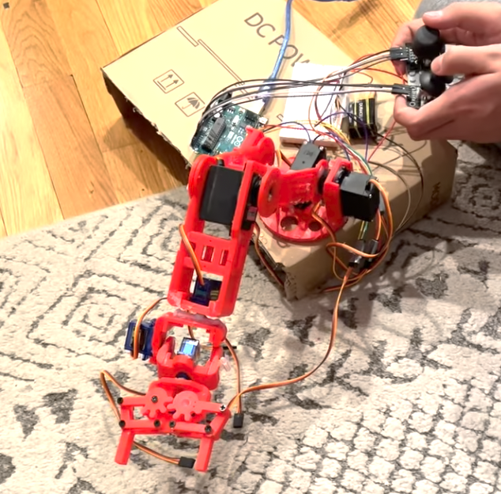

Hey there! My name is Jonathan Li, and I'm currently a sophomore in high
school. I'm really into autonomous robotics and ML, and I've been building
cool things ever since I was young. I have a Youtube channel where I explain many of my projects, and my GitHub
has most of the code for them. Scroll down to view some of my work!
My GitHubMy youtube channel
I'm working at a lab at UMass Amherst for an upcoming humanoid project and arm! I so far helped with IsaacLab RL training, STM32 stuff, and got to learn PCB design.
Some Projects I'm Proud of! Split into categories (I tried my best to classify)
I got to learn and design a pcb in KiCad.
I created a little GUI for tuning Kp and Kd values for BLDC motors. Angle, torque, & velocity graphs are shown.
Isaac Sim and Isaac Lab setup!
I created a little "oscilloscope" using an STM32, it reads data from a potentiometer and shows it on a python GUI. I learned more about ADCs.
I made Casper V1, my first functional quadruped robot dog with only 2 DOF per leg. I used skills I learned from Precalculus like
trig (law of cosines) and parametric equations to make the stepping trajectory a semi-ellipse. I named him Casper because I know a dog named Casper and he's really cute!
I played around with brain tumor detection and pneumonia detection using CNNs in PyTorch (I used Kaggle datasets). I wanted to see how ML could be used in healthcare.
Little DDPM
I played around with VQA using the moondream VLM on a Jetson Orin Nano.
I played around with the IMX219-83 stereo camera with the Jetson Orin Nano and created a disparity map.
Gesture controlled mouse using Google's Mediapipe API for hand
landmarks & PyAutoGUI to control the mouse.
Displaying 3D models on Hiro (or other fiducial markers like QR codes)
using AR.js, I may look into VSLAM instead.
I used the NEAT algorithm for CartPole.
I created a web page using OpenCV.js to show computer vision
algorithms! Typically OpenCV is with Python or C++, but this uses JS
so no Python backend needed!
I played w/ ORB feature detection and mapping (BF matcher, FLANN).
I used RL (specifically Q-learning) for a "car" (yellow rectangle) to
reach a goal (green circle). The trained model is stored in a pickle file.
Facial feature recognition using Haar Cascades (pretty old but powerful algorithm).
PyTorch digit classification using a CNN. Data is from the MNIST
dataset.
Sentiment analysis using sklearn. I'm using the IMDB movie review dataset from Kaggle.
GroundingDINO and PyTorch for FRC 2025 algae detection, helped by
mentor.
Lunar Lander RL using PPO.
Raspberry Pi facial recognition security camera.
Played w/ YOLO11
LiDAR connected to Raspberry Pi real time data visualization in RViz
via SSH
I learned the basics of ROS! Gazebo & RViz sim shown.
I made an autonomous Raspberry Pi robot that delivers snacks using voice commands, follows AprilTags, and picks
up objects using YOLO object recognition. It uses a vosk model and YOLO converted to the NCNN format to run at a useable speed on the pi.
HC-SR04 ultrasonic sensor motion lamp mean't to make life easier,
especially for when you need to get up midnight. I made this in middle school and may or may not have gotten shocked once.
Arduino roomba using LiDAR (RPLiDAR A1M8), no SLAM.
Arduino state-machine based autonomous robot to throw away trash (plastic
bottles). I used mecanum wheels since I wanted strafe capabilities but also less complexity than say a swerve or crab drive.
I made Pioneer V3. I used carbon fiber propellers and 3508 BLDC motors for heavier lifting weight. In total Pioneer V3 weighs 5 lb.
I gave myself a challenge and made Pioneer V2, a larger Arduino quadcopter (30 in dia) in only around 20 hours!
I added a dropping mech to my first Arduino quadcopter I made in 8th grade. I noticed during the winter rabbits and coyotes were looking for food so I thought this could be used to prevent animal starvation.
I did a little experiment converting my custom swerve module into an arm so 2 main motors are at the bottom. I thought this could help reduce inertia and be more efficient.
I made a little 2D inverse kinematics demo. Its sort of like a SCARA arm.

6 DOF 3D-printed arm, I made this in 7th grade.
Mini 3D printed 3 DOF arm (not my design, from Thingiverse) but I'm using an STM32. It's very silent because of the small stepper motors.
I made a Rocker Bogie suspension rover inspired by the mars rover. This can be used for robots outside on rough terrain. It's just using an Arduino, I mainly wanted to see the concept.
I made a water rocket
I made a simple but fairly fast mini autonomous race car just using ultrasonic sensors. I experimented with slowing down before accelerating near turns. I was inspired by F1Tenth although this is way less complicated...
I played with lane detection in OpenCV. I used Canny edge detection and the Hough Transform.
My RC FPV strandbeest model using NRF24l01 modules. Goal was to mimic an animal so you could
use it to monitor species.
I made an Arduino based 2 wheel self balancing robot (wheel inverted pendulum) that uses an MPU6050 and a complementary filter.
My custom Arduino swerve drive, I basically designed everything! Check out my Youtube video to see more on my 3D-printed module design.
(Heres a photo of my swerve module CAD).
I tried making a passive wing morphing mechanism for my rubber-band powered ornithopter.
Stuff I brought to show at Open Sauce 2024!
ArUco marker pose display (also one of my Open Sauce 2024 projects).
I made an ESP32 controlled car.
I made a super capacitor monocoper/mapleseed
I made a lightbulb using graphite and a poorly sealed glass body using a 3D-printed TPU closure...
I made a large RC boat that could be used for water missions
I made different kinds of (very) odd electric scooters and skateboards...
I experimented a bit with gyroscopic precession in helicopters. I also made a rubber-band powered helicopter with a tail rotor, inspired by Peter Sripol.
I made a gravity powered ping-pong ball launcher for middle school SciOly. I added a crank mechanism to angle the launcher barrel.
I made a marble roller coaster for middle school SciOly. I 3D-printed the tracks.
I made this voltage detector inspired by ElectroBoom's video...
I made this sketchy brushed DC motor
I made a tiny state machine robot using an MPU6050 so it can drive straight.
I made a mechanism for a battlebot to launch a bottle. Same mechanism as the water rocket but w/o water, servo to release the pressure.
I tried making different types of rubber band powered ornithopters, such as a dragonfly that sadly didn't fly too well...
Visiting Boston Dynamics!
I got to visit Boston Dynamics' headquarters in Waltham, MA! It was super
fun seeing their robots & driving some of their quadrupeds.
My Open Sauce 2024 experience & some cool (& famous) people I met!
My booth! Me explaning a dragonfly ornithopter mechanism which many
found interest in (even a professor at MIT!) This simple mechanism could be used for tiny drones,
although
I'm not too sure if it would be more efficient than just using
propellers
At my booth I showed my Arduino quadcopter which uses an MPU-6050 gyro &
accelerometer, a 3D-printed humanoid hand, a line follower using 2 IR sensors,
facial recognition on a Raspberry Pi, an ornithopter, ArUco marker
detection, and a simple HC-05 bluetooth RC car. It was very fun!
I met Veritasium!I met James Hobson (The Hacksmith)!I met Allen Pan!I met Tom Stanton!I met Styropyro (Drake)!I met Jake Laser (JLaserVideo)I met Joel (Joel Creates)!I met Peter Sripol!I met James Whomsley (Project Air)!
Eternal Progression (Josh) was in the same hotel!